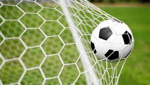
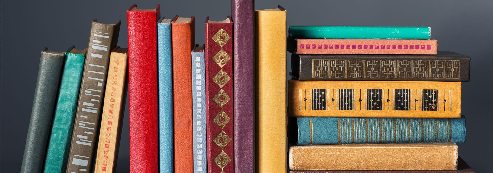
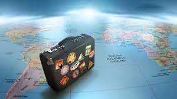

Футбол
Мне всегда нравился спорт. Мой папа с детства приучал меня к тому, что нужно заниматься спортом, что спорт – это то, к чему нужно стремиться. Но я из всего этого разнообразия выбрал футбол, потому что, он полон азарта. Сначала, это просто влечение посмотреть каждый футбольный матч, поболеть за любимую команду, потом я обожал гонять мяч с друзьями во дворе. Записавшись на кружок, я научился настоящему, профессиональному футболу. Возможно, многие думают, что футбол – это просто бессмысленное пинание мяча по полю, но для меня это намного больше, чем просто игра.
Книги
Из всего разнообразия увлечений, мое хобби – это книги. Когда я начинаю читать, я отдаю всю себя и могу просидеть за чтением какой-нибудь интересной книги чуть ли не весь день, забыв о сне и еде. Когда я читаю, я успокаиваюсь. Читая, я познаю себя, создаю свою собственную реальность. Одна книга – она реальность. А у меня их набралось уже очень много.
Путешествия
Я очень люболю путешествовать, потомучто это помогает мне отдохнуть и увидеть много нового и интересного. Путешествия - это хороший способ сменить обстановку, переключиться на что-то другое. Это очень полезно для мозга, нашего здоровья, а также дает положительне эмоции. Взрослые много работают, и им нужен отдых от этого. Дети много учатся и тоже устают, поэтому должны отыхать. Путешествия помогают набраться витаминов, солнца и энергии на весь следующий учебный год. Я предпочитаю именно путешествовать, а не просто ездить в одно и то же место, где мне все известно. Посещение новых мест расширяет наш кругозор, обогащает наш внутренний мир и меняет нас. Мы становимся более открыты новому опыту. В путешествиях мы также можем знакомиться с новыми людьми, заводить хороших друзей.